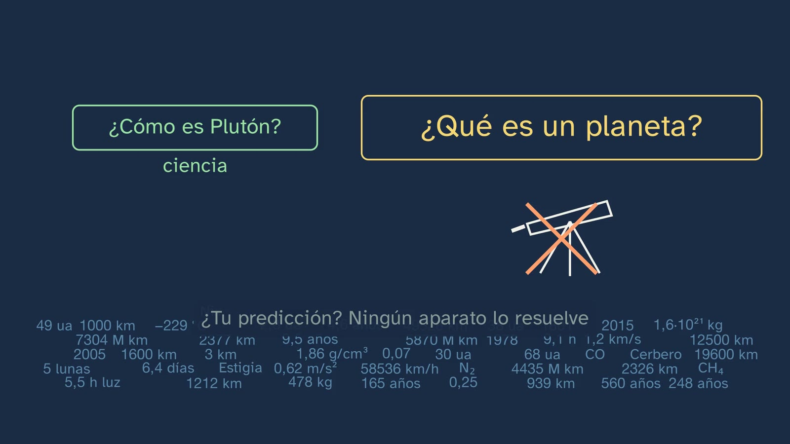
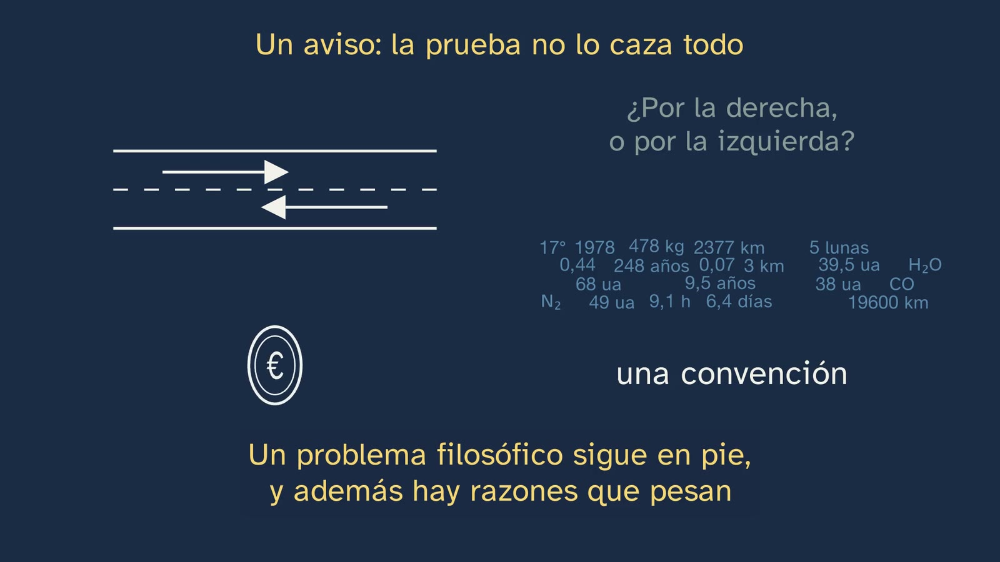
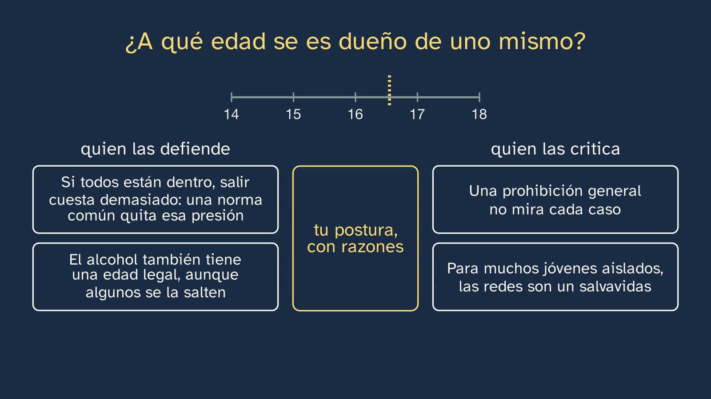

Dónde se esconden los problemas filosóficos
En pocas palabras
La clase responde a una pregunta doble: ¿dónde se esconden los problemas filosóficos, y cómo se distinguen de los de la ciencia, la religión o el arte? Empieza por una foto real: Praga, 24 de agosto de 2006, cientos de astrónomos alzan una tarjeta amarilla y Plutón deja de ser un planeta. ¿Qué aparato habría resuelto la cuestión? El alumnado lo predice, y la clase contesta en cuatro pasos:
- Primero, un caso. El 16 de agosto, una propuesta daba doce planetas; el 24, la asamblea aprobó otra y salieron ocho. En esos ocho días Plutón no cambió, y la Unión Astronómica no citó ningún dato nuevo: cambió la regla. Después, New Horizons: en 2015, la misma sonda cerró cuál es más ancho, Plutón o Eris, y no cerró si Plutón es un planeta. Dos preguntas, y sólo una se acaba.
- El matiz que hace honrada la tesis. Que no se mida no quiere decir que dé lo mismo. Platón pide cortar por las articulaciones naturales, y hay dos cortes razonados, con los mismos datos. Con Plutón, en parte, es una palabra: por eso se pudo votar. Pero debajo queda una pregunta que no se vota: esas fronteras, ¿las pone la naturaleza, o nosotros? Y a veces nos jugamos mucho: la muerte, en la clase 4.
- La regla. Una prueba práctica, del canal: imagina que ya tienes todos los datos; si la pregunta sigue en pie y hay razones que pesan, ahí puede esconderse un problema filosófico. Difícil no quiere decir filosófica; conducir por la derecha sigue en pie, y es una convención; y «si no se mide, es opinión» no pasa su propia regla.
- La distinción y el método. Lo que separa a la filosofía de la ciencia, la religión y el arte no es el tema, sino en qué se apoya cada una: en lo que se mide, en la fe, en lo que te hace ver, o sólo en razones. Russell la pone en una tierra de nadie, Tomás de Aquino traza una línea en el mismo sitio y la valora al revés, y Gould y Dawkins discuten por dónde pasa. Y se caza en tres pasos, aplicados a una noticia (la ley australiana de las redes y los menores de 16, con Mill) y a una película (El show de Truman, con Aristóteles): aparta las preguntas de datos, imagina que ya los tienes todos y quita los nombres.
Objetivo. Al terminar, el alumnado sabrá distinguir la filosofía de la ciencia, la religión y el arte, y descubrir la pregunta filosófica que esconde una noticia, una película o un avance científico.
La prueba es una herramienta para empezar a pensar, no una definición de filosofía. La clase lo dice («no es una ley, es una regla práctica», 8:31), y esta ficha da sus límites (véase «Para ampliar»). La clase termina con esos límites convertidos en la pregunta abierta: cuando una pregunta sigue en pie con todos los datos, ¿es muy honda, o está mal hecha?
Las palabras.
- Prueba de todos los datos. Nombre y regla del canal: no sale de ningún autor. Tiene parientes (Moore, Wittgenstein), que están en «Para ampliar».
- Pregunta de datos. La que se acaba cuando se tienen los datos, aunque sea dificilísima. La clase no dice «pregunta científica», porque «¿dónde dejé las llaves?» también se acaba con un dato, y no es ciencia.
- Convención. Lo que basta con acordar, porque da igual qué se elija. «Conducir por la derecha» es el ejemplo de la clase, y también el de la Stanford Encyclopedia («Convention»).
- Planeta enano. Otra categoría, no una clase de planeta: el comunicado de la Unión habla de «two distinct classes of objects», y la resolución que los hacía un subtipo perdió.
- Teología y lo revelado. La clase dice «lo que, según la fe, Dios ha revelado» (2:01), como la clase 2. «Dogma» sale sólo en boca de Russell (13:48 y 14:57).
- Poesía. Para Aristóteles, las obras de ficción, como las tragedias: no el verso. La clase lo aclara (20:28).
- Postura. La palabra de la clase 1: una opinión se tiene; una postura se defiende, con razones.
- Clases naturales. El nombre técnico de lo que la clase llama «articulaciones». No sale en la voz.
Currículo
Real Decreto 243/2022, Filosofía (texto consolidado del BOE; la copia del laboratorio es idéntica, comprobada para la ficha del tema). Los saberes son del bloque A, «La filosofía y el ser humano», apartado 1, «La reflexión filosófica en torno a la propia filosofía». Los minutos son los del vídeo.
| Elemento | Qué dice el decreto | Dónde se trabaja |
|---|---|---|
| Saber básico (bloque A.1) | «La filosofía en relación con otros campos del saber y la actividad humana.» | Toda la clase: con la ciencia (2:09 a 8:30), con la religión y el arte (11:22 a 13:26), y dónde pasa la frontera (13:26 a 16:03) |
| Saber básico (bloque A.1) | «Métodos y herramientas básicos del filósofo: […] la identificación de problemas filosóficos en otros ámbitos de la cultura; el pensamiento y el diálogo argumentativos […]» | La prueba (8:30), los tres pasos (16:03), la noticia (16:21) y la película (18:26) |
| Competencia específica 1 | «Identificar problemas y formular preguntas acerca del fundamento, valor y sentido de la realidad y la existencia humana, a partir del análisis e interpretación de textos y otras formas de expresión filosófica y cultural, para reconocer la radicalidad y trascendencia de tales cuestiones […]» | Una resolución astronómica, una ley y una película, convertidas en preguntas. Los ejercicios 2 y 3 y la actividad |
| Competencia específica 6 | «Comprender las principales ideas y teorías filosóficas de los más importantes pensadores y pensadoras, mediante el examen crítico y dialéctico de las mismas y de los problemas fundamentales a los que estas responden […]» | Platón (6:03), Kant (12:09), Russell (13:26), Tomás de Aquino (1:45 y 14:33), Gould y Dawkins (15:17), Mill (17:26) y Aristóteles (20:24), cada uno con su texto; y Kant otra vez (¿Qué es la Ilustración?, 20:07) |
| Competencia específica 7 | «Adquirir una perspectiva global, sistémica y transdisciplinar en el planteamiento de cuestiones fundamentales y de actualidad, analizando y categorizando sus múltiples aspectos, distinguiendo lo más substancial de lo accesorio e integrando información e ideas de distintos ámbitos disciplinares desde la perspectiva fundamental de la filosofía […]» | «Distinguir lo más substancial de lo accesorio» es el tercer paso, quitar los nombres (17:11). Los datos hacen falta, pero no bastan (9:59) |
| Criterio 1.1 | «Reconocer la radicalidad y trascendencia de los problemas filosóficos mediante su reconocimiento, análisis y reformulación en textos y otros medios de expresión tanto filosóficos como literarios, históricos, científicos, artísticos o relativos a cualquier otro ámbito cultural.» | «Reformulación» es lo que hacen los tres pasos: una noticia (16:52 a 17:11) y una película (19:00). Medios científicos (la resolución B5, 3:37), artísticos (Van Gogh, 12:01) y religiosos (el salmo, 11:46) |
| Criterio 6.1 | «Tomar consciencia de la riqueza e influencia del pensamiento filosófico identificando y analizando las principales ideas y teorías filosóficas en textos o documentos pertenecientes a ámbitos culturales diversos, así como poniéndolas en relación con experiencias, acciones o acontecimientos comunes y de actualidad.» | La foto de la votación (2:09), la ley australiana, con su página real (16:21), y Mill puesto ante ella (17:26). Platón y Aristóteles, puestos ante Plutón y una película |
| Criterio 7.1 | «Afrontar cuestiones y problemas complejos de carácter fundamental y de actualidad de modo interdisciplinar, sistemático y creativo, utilizando conceptos, ideas y procedimientos provenientes de distintos campos del saber y orientándolos y articulándolos críticamente desde una perspectiva filosófica.» | Plutón, con datos reales de órbitas y masas; la frontera de la muerte (8:04); el cerebro y la edad adulta (9:43); las redes y los menores (16:21) |
El método del decreto. Pide una enseñanza «en buena medida dialógica», que no sea «una mera exposición programática de temas y cuestiones», sino «una experiencia real de descubrimiento de los interrogantes filosóficos» (introducción de la materia). Por eso la clase no compara cuatro definiciones: plantea un caso, deja que el alumnado se equivoque en su predicción, y le da una herramienta que puede repetir solo. La descripción de la competencia 7 dice casi lo mismo que la clase sobre los datos: para los problemas ecosociales, pide un análisis en que «se integren datos y explicaciones científicas junto a concepciones filosóficas».
La profundidad de 1.º. Es una primera visión. La relación con la ciencia y con los otros saberes vuelve a fondo en el tema 6, con dos saberes del bloque B.1: «El saber científico: definición, demarcación y metodologías científicas. La filosofía de la ciencia: naturaleza, problemas y límites del conocimiento científico» y «Otros modos de saber: el problema del saber metafísico; las creencias religiosas; la razón poética; el saber común».
Lo que hay que traer.
- De la clase 1: una opinión se tiene; una postura se defiende, con razones (lo recoge 11:06); y Russell, con las ciencias que se van.
- De la clase 2, la de la mesa: la frontera de Tomás de Aquino entre la razón y lo revelado, y su «frontera no quiere decir guerra». Es la pregunta de recuperar (1:45) y vuelve en 14:33.
- De la clase 3: por qué chocaban o no la fe y la razón en la Edad Media.
- De la clase 4: las ramas (el ejercicio 2 las pide) y la bioética: los respiradores y el comité de Harvard (8:04).
- De la ESO: distinguir una opinión de un dato. Es lo único que se da por sabido, porque buena parte del alumnado empieza aquí de cero (ficha del tema).
Lo que añaden las comunidades (sólo contraste, leído en sus boletines):
| Comunidad y norma | Qué añade | Dónde lo da la clase |
|---|---|---|
| Andalucía · Orden de 30 de mayo de 2023, BOJA núm. 104, 02/06/2023 | «El carácter interdisciplinar de la Filosofía. Ciencia y Filosofía. Los códigos deontológicos.» Y un criterio nuevo, el 7.2: «Entender las relaciones entre la Filosofía y otros modos de saber -especialmente, el conocimiento científico-, así como sus influencias e interacciones mutuas, y utilizar este conocimiento para analizar problemas complejos de actualidad y rechazar actitudes pseudocientíficas e irracionales.» | Ciencia y filosofía, en toda la parte de Plutón; la frase «si no se mide, es opinión» (10:30). La pseudociencia y los códigos, en la tabla de abajo |
| Castilla y León · Decreto 40/2022, BOCYL núm. 190, 30/09/2022 | «La filosofía como teoría de la racionalidad», junto a este saber; y el criterio 1.2: «Identificar los distintos medios de expresión cultural descubriendo en ellos temas para la reflexión y el debate filosófico» | «En qué se apoya cada una» (12:48); la caza en una película (18:26) y el ejercicio 3 |
| Galicia · Decreto 157/2022, DOG núm. 183, 26/09/2022 | «Comparación con outros campos do saber: mitoloxía, relixión, ciencia, saber común, razón poética.» Y el criterio CA1.5: la filosofía como saber «fundamental, crítico e universal, distinguíndoo doutros saberes e actividades humanas» | Religión y ciencia, aquí. Los demás, en la tabla de abajo |
| Madrid · Decreto 64/2022, BOCM núm. 176, 26/07/2022 | «El carácter interdisciplinar de la filosofía. Ciencia y filosofía. Los códigos deontológicos.» | Como Andalucía |
Lo que el profesorado puede echar en falta, y dónde está. La clase se queda en la ciencia, la religión y el arte, que son los que nombra su objetivo. El resto del saber tiene sitio en el canal:
| Contenido | Lo piden | Dónde está |
|---|---|---|
| El mito | Galicia; los libros, con el paso del mito al logos | Clase 3: cómo nació la filosofía y por qué «del mito al logos» es una interpretación discutida |
| El saber común | El decreto (B.1); Galicia | Tema 6, clase 5, «Más allá de la ciencia: metafísica, fe, poesía y sentido común». Aquí sólo asoma: «¿dónde dejé las llaves?» es una pregunta de datos |
| La razón poética | El decreto (B.1); Galicia | Clase 2 (Zambrano) y tema 6, clase 5 |
| La pseudociencia | Andalucía, criterio 7.2 | Tema 6, clase 1, «¿Qué hace que algo sea ciencia?». Una pista para hoy, que es lectura nuestra: una pseudociencia hace afirmaciones de datos, y con datos se acaban; que suene honda no la vuelve filosófica |
| Los códigos deontológicos | Andalucía y Madrid, en este saber | Tema 9, clase 6, «La ética baja a la calle». Es donde los agrupa la ESO (Real Decreto 217/2022: «Los códigos deontológicos. Las éticas aplicadas»). El decreto de Bachillerato no los pide en ningún bloque, y ninguno de los libros vistos los trae |
Dónde lo traen los libros. De los doce proyectos editoriales que contrastamos con su unidad 1 a la vista, nueve comparan la filosofía con los otros saberes, y casi todos traen cine y un debate. Ninguno trae los códigos deontológicos. La comparación suele ser una lista; lo que añade esta clase es un caso real, una regla que se puede aplicar y un método de tres pasos.
Cómo está construida la clase
Capítulos del vídeo
Casi veintitrés minutos (22:50), en once capítulos. Javier sale a cámara cuatro veces: al saludar (0:00), con el gancho (0:17), a mitad (11:15) y al despedirse (22:38). El hilo es una lluvia de datos: cae sobre las preguntas, deshace unas y deja otras en pie. Cae por primera vez sobre Plutón, por delante de la neblina (4:53), y vuelve en la prueba (8:30), en la convención (10:04), en Gould (15:46), en la noticia (16:52) y en la pregunta abierta (22:14). Y un mismo gesto, un trazo que busca su sitio, se repite tres veces: el marco de los planetas (3:04), la línea discontinua que pasa de «planeta | planeta enano» a la muerte (7:45 a 8:20) y la rayita de las edades (17:45). Tres palabras, tres fronteras.
| Capítulo | Qué pasa | Por qué así |
|---|---|---|
| Qué vamos a ver (0:00) | Javier saluda; el mapa del tema, con la quinta clase recuadrada (0:04). Gancho a cámara (0:17): en Praga, en 2006, cientos de astrónomos alzaron una tarjeta amarilla, y el sistema solar perdió un planeta. ¿Qué había cambiado? | Una pregunta con su quién, su cuándo y su dónde. |
| Las soluciones de la clase anterior (0:27) | Las tres, cada una con su enunciado: una moneda de la que salen tres hilos a tres ramas (0:27); el secreto, la mesa y la estrella, que vuelan a su casilla (1:02); y las cuatro preguntas de la línea del tiempo con su rama, y la de la fe y la razón, con tres hilos (1:22). Recuperar (1:45): la línea de Tomás de Aquino, de la clase de la mesa. Se traza con tiza (2:01). | Práctica espaciada. La línea de 2:01 es un anzuelo: vuelve en 14:33. |
| Plutón: ¿medido o votado? (2:09) | La foto real de la votación, con su zoom a las tarjetas y a la pantalla del escenario (2:09). El sistema solar en movimiento, con órbitas reales (2:30); nace Eris (2:39). Predice (2:49; contador en 2:58): ¿qué aparato lo resolvería? Dos fechas: el marco de la lista se alarga hasta doce y se encoge hasta ocho, sin que ningún cuerpo desaparezca ni deje de moverse (3:04); «lo que cambió fue la regla» (3:33). Las tres condiciones (3:37) y qué es limpiar una órbita (3:50); la vista se abre al cinturón real del JPL, miles de puntos (4:03); «planeta enano ≠ planeta» (4:15). La sonda (4:23), rumbo a un planeta que dejó de serlo. Hubble y New Horizons (4:41); la neblina se atenúa y empieza la lluvia de datos (4:53). Un calibre mide los dos círculos: 2377 y 2326 km (4:57); Stern (5:09). La otra pregunta no se cierra (5:19). «Dos preguntas, la misma sonda» (5:36), y se cierra la predicción (5:56). | Lo que se mueve es la regla, y los cuerpos siguen a lo suyo: se ve sin que nadie lo diga. La sonda es la prueba de todos los datos antes de tener nombre. |
| Cortar por las articulaciones (6:03) | «PLUTÓN» pierde una letra y es «PLATÓN». La cita del Fedro, tecleada; una pata de pollo rotulada, «por la articulación» y «quebrando el hueso»; «¿lo pone la naturaleza?, ¿o lo ponemos nosotros?» (6:25). La gráfica de Soter, con cada raya por diez (6:43), y el hueco (6:58). La otra respuesta (7:02): lo que una cosa es no debería depender de dónde está; «la Tierra, muy lejos del Sol» (7:09); «más de 100 planetas», con la Luna. Dos fichas hermanas, la primera con el gráfico en pequeño, sin rótulos, y «los mismos datos». «Clasificar es trabajo de la ciencia» (7:39). «Sólo una palabra» (7:45): con Plutón, en parte, sí; la pregunta que no se vota (7:53); y la misma línea discontinua pasa de «planeta | planeta enano» a la muerte, con el corazón que late, el cerebro dañado y «Harvard, 1968» (8:04 a 8:20). |
| La prueba de todos los datos (8:30) | «Una prueba: una regla práctica, no una ley» (8:31). La lluvia sobre las dos preguntas de Plutón: una se deshace, «era de datos»; la otra aguanta, «ahí puede esconderse» (8:37). Para y piensa con cuatro fichas, cada una con su dibujo (8:54; 9:11; contador en 9:17). La lluvia sobre cada una: «difícil ≠ filosófica» (9:27). El cerebro y la edad adulta, con un hueco en medio, «¿cuánta madurez hace falta?»: los datos hacen falta, pero no bastan (9:43 a 9:59). El aviso (10:04): conducir sigue en pie, pero en gris; «una convención» (10:22); se añade «y además hay razones que pesan» (10:23). | La regla, con su contraejemplo dicho por la propia clase antes de que lo diga un alumno. |
| «Si no se mide, es opinión» (10:30) | La frase, como un sello. Para y piensa (10:38; contador en 10:44): ¿con qué aparato la mides? Con ninguno (10:49): se le da la vuelta y se ve el reverso, «postura filosófica». «Eso no quiere decir que todo valga» (11:06). Javier, a mitad (11:15): lo importante hasta aquí. | La objeción directa a la prueba, desmontada con su propia regla. |
| El mismo cielo, cuatro miradas (11:22) | Un cielo que titila y cuatro fichas, bajo «¿en qué se apoya?». Cecilia Payne y la luz en un prisma (11:35); el salmo (11:46); La noche estrellada, de Van Gogh, a pantalla casi completa, con sus remolinos en movimiento (12:01); Kant, con el cielo detrás (12:09): «ante tantos mundos, su importancia, por así decir, aniquilada» (12:18) y «la ley moral eleva su valor» (12:29); y su razón (12:30). «Lo que las separa» (12:48): la ficha de la filosofía gana «sólo razones» al decirlo; «razonar, razonan casi todos» (13:07) y «la filosofía no tiene otro apoyo» (13:12); y «para qué estamos aquí» se coloca entre la religión y la filosofía (13:17). | Cuatro fichas hermanas, con el mismo peso. La pregunta común evita leerlas como cuatro cajones. |
| La tierra de nadie (13:26) | Un mapa, «imagina dos trincheras» (13:38): ciencia, teología y, en medio, la franja vacía. Las dos flechas de Russell (14:03). La frontera se mueve (14:16): de qué están hechas las estrellas cruza a la ciencia, y «¿qué debo hacer?» aguanta bajo la lluvia (14:27). Russell y Tomás, a los lados, con la línea en el centro y, sobre ella, «filosofía | teología» (14:33): «lo revelado: dogma» (14:57) y «lo revelado: lo más seguro» (15:00), en el mismo color; y la trinchera se borra del lado de Tomás (15:10). Dos círculos que se separan y se solapan: «Gould, 1997: dos terrenos que no se solapan» (15:22); «Dawkins: no es tan limpio» (15:35), con una zona común, «hechos»; y los teólogos (15:43), «en parte». La prueba, otra vez (15:46). |
| A la caza: una noticia (16:03) | Los tres pasos, en fichas que se quedan en una esquina: «1 · aparta las de datos», «2 · imagina todos los datos» y «3 · quita los nombres» (16:03). La ley australiana, con su página real, «must take reasonable steps», y la multa, para la empresa (16:21). Paso uno, con la cabecera «Aparta las preguntas de datos» (16:39), paso dos (16:52) y paso tres (17:11): se tachan «Australia», «quince años» y «red», y lo que queda se recoloca. Mill (17:26), con dos citas, la del daño y «Sobre sí mismo […], el individuo es soberano» (17:39), y «su propio bien no basta», sin comillas. La frase de los jóvenes, completa (17:45), y una regla de edades con una rayita que se mueve. ¿A qué edad se es dueño de uno mismo? (17:56). Dos argumentos por lado (17:58 y 18:12), «quien las defiende» y «quien las critica», en el mismo color, y un hueco en el centro: «tu postura, con razones» (18:20). La rayita acaba hacia 16,5 sólo porque tiene que pararse en algún sitio: no es una respuesta. | Una herramienta que se puede repetir con el titular de mañana. Mill sirve primero a un lado y luego al otro. Sin veredicto. |
| A la caza: una película (18:26) | Dibujos de tiza del canal, sin ninguna imagen de la película. Una casita bajo una cúpula (18:26); el barco choca contra el cielo (18:41); lo que le dice el creador del programa (18:50). Sólo queda el tercer paso (19:00): la pregunta de partida es «¿Debe Truman dejar la televisión y vivir una vida verdadera, con miedo?»; se tachan «Truman» y «la televisión», y queda ¿vale más una vida verdadera, con miedo, que una falsa y segura? (19:12). Silencio: se va todo y la pregunta se queda sola, en grande; la voz la relee por mitades (19:20). «Truman no existe. Y justo por eso habla de ti» (19:29): la puerta y el plató, en el mismo color, «una verdad que da miedo» y «una mentira que no duele», y «Tú, ¿qué opinas? ¿Con qué razones?», con contador (19:54). Después, una jaula abierta y un pájaro que no sale (20:00): Kant, «Es tan cómodo ser menor de edad», y el título de Erich Fromm, El miedo a la libertad. Aristóteles (20:28), con su retrato imaginado, de Hayez: la cita de la Poética, arriba; una tabla por columnas, y dos flechas entre «lo general» y «los nombres»; «nosotros hacemos el camino inverso» (20:53). Recapitulación (21:04), con los escondites, las cuatro fichas y los tres pasos. | El mismo gesto de la noticia, más rápido. El «camino inverso» da un fundamento clásico al método. |
| Para practicar y seguir pensando (21:38) | Tres ejercicios, cada uno en su ficha. La pregunta abierta (22:14; contador en 22:24), con la lluvia de datos sin fin. La clase 6 (22:29). Despedida (22:38): con todos los datos, mira qué pregunta sigue en pie, y si hay razones que pesan. | Las soluciones abren la clase 6. |


Plan de una sesión de 50 minutos
Pensado para que la actividad llegue cuando el alumnado ya ha visto la caza de la noticia, y antes de la película. El vídeo es largo: si hay dos sesiones, véase abajo.
| Minutos | Qué se hace |
|---|---|
| 0–2 | Sin vídeo: «Antes de empezar», en la hoja. Una pregunta que la ciencia nunca podrá contestar, y dos frases. |
| 2–10 | Vídeo de 0:00 a 8:30 (si las soluciones de la clase 4 ya se corrigieron, se salta de 0:27 a 2:09). Parada en 2:54: la predicción, por escrito. Se recupera en 5:56. |
| 10–14 | Vídeo de 8:30 a 11:22. La tabla de la prueba se rellena en 9:17, antes de ver la respuesta. Parar en 10:40: un minuto en parejas, «¿con qué aparato la mides?». |
| 14–19 | Vídeo de 11:22 a 16:03. La tabla de las cuatro miradas, sobre la marcha. |
| 19–22 | Vídeo de 16:03 a 18:22: la caza de la noticia. |
| 22–37 | La actividad: a la caza (abajo). |
| 37–40 | Vídeo de 18:26 a 20:29: la película. |
| 40–45 | Vídeo de 21:38 al final (22:50). La pregunta abierta, en voz alta o al diario filosófico. |
| 45–50 | «Al final de la clase», en la hoja: ¿sigue en pie tu pregunta? Los ejercicios, para casa. |
Si hay dos sesiones, se corta a mitad, en 11:15, con Javier a cámara. La segunda sesión empieza con la prueba aplicada a una pregunta nueva, y deja más tiempo para la actividad y para el debate de la noticia.
Si hay poco tiempo, el vídeo entero, con sus paradas (unos 27 minutos), y una caza rápida con un solo titular, en común, en la pizarra (10 minutos).
Si el debate de la noticia prende, conviene llevarlo a la pregunta sin nombres, no al caso. El profesor modera y no da su veredicto.
Errores típicos y cómo se tratan
Son confusiones frecuentes que el diseño prevé; no hay, que sepamos, una investigación didáctica tan sólida sobre ellas como la de las ciencias. Varios se repetían en una revisión de vídeos divulgativos muy vistos, hecha para preparar la clase.
- «Es filosófica porque es difícil.» Es el primer error de la prueba (9:27). La de las estrellas es dificilísima, y con todos los datos se acaba. Tiene algo de verdad: muchas preguntas filosóficas son difíciles. Pero lo que las distingue es que no se acaban con datos, no que cuesten.
- «Es sólo una palabra.» La clase le da la razón a medias (7:45): con Plutón, en parte, sí, y por eso se pudo votar. Pero debajo hay una pregunta que no se vota, y con la palabra «muerte» se ve lo que nos jugamos. En el aula conviene separar los tres niveles (véase «Para ampliar»): qué nombre usamos, qué clasificación es mejor, y si esas fronteras las pone la naturaleza.
- «Si no se puede medir, es pura opinión.» Es el error que la clase desmonta con su propia regla (10:38): esa frase no se mide con ningún aparato. Y añade lo que evita el error contrario: eso no quiere decir que todo valga (11:06). Cuidado: la clase ataca un eslogan, sin atribuírselo a nadie. No es lo que decían los positivistas lógicos (véase «Para ampliar»).
- «Los datos no pintan nada: Plutón lo decidió una votación.» Es verdad sólo para esos ocho días. Los datos abrieron el problema: la propia resolución B5 dice «Recent discoveries lead us to create a new definition». Desde 1992 fueron apareciendo objetos más allá de Neptuno, y en 2005, Eris. Por eso la clase dice «los datos abrieron el problema, pero no lo cerraron» (5:40), y «la Unión Astronómica no citó ningún dato nuevo» (3:30), no «no hubo ninguno»: es una ausencia en los documentos, no una prueba.
- «424 astrónomos votaron la definición.» Lo repiten varios vídeos muy vistos. La definición no se contó: pasó «with a great majority». Lo que se contó fue la resolución sobre Plutón: 237 a favor y 157 en contra. La clase dice «cientos» (0:17). Véase «Para ampliar».
- «Un planeta enano es una clase de planeta.» No: es otra categoría (4:15). Por eso la clase lo dice aunque suene raro.
- «La ciencia da hechos y la filosofía, opiniones», o «aquí la filosofía le gana a la ciencia». Es una falsa pelea. Clasificar es trabajo de la ciencia, y los dos lados de la discusión son científicos (7:39). La clase no enfrenta a la ciencia con la filosofía: enseña dos clases de pregunta ante la misma sonda.
- «La religión cree y la filosofía razona.» Es la caricatura que la clase evita: no dice qué hace cada una, sino en qué se apoya al final. «Razonar, razonan casi todos. Tomás de Aquino razona, y mucho» (13:07). Por eso «para qué estamos aquí» la pueden contestar la religión y la filosofía, cada una con su apoyo (13:17). Quien pregunta si la religión es irracional ha entendido mal la clase, y conviene decirlo.
- «La filosofía es la única que usa sólo razones.» Las matemáticas y la lógica tampoco miden, y también se apoyan sólo en razones. Lo que dice la clase de la ciencia (12:48) vale para las ciencias que observan. Es un límite real de las cuatro fichas (véase «Para ampliar»).
- «Russell define la filosofía.» Es una propuesta suya, y lo dice: «as I shall understand the word». La clase lo marca («para él», 13:41). Y hay una tensión que un alumno atento puede señalar. Para Russell, en la tierra de nadie está lo que aún no se sabe de forma definida; por eso «de qué están hechas las estrellas» pudo estar ahí. Pero, según la prueba, esa siempre fue una pregunta de datos, y «difícil no quiere decir filosófica». Son dos ideas distintas de lo filosófico. La clase las separa con cuatro palabras: «otras, según nuestra prueba» (14:27). Es una buena discusión, no un descuido que haya que tapar.
- «Tomás de Aquino y Russell dicen lo mismo», o «Tomás opone la ciencia y la fe». Coinciden en por dónde trazan la frontera: según de dónde viene el saber. Pero para Tomás la doctrina sagrada es ciencia, y sus «disciplinas filosóficas» incluyen lo que hoy es ciencia. Tampoco está en la tierra de nadie: para él, razón y fe se tocan sin chocar («no hay trincheras», 15:10). Y no conviene hacerle defensor de la autonomía de la filosofía: la razón, dice, sirve a la fe (Suma teológica I, q. 1, a. 8, ad 2; clase 2).
- «Gould propuso una tregua: que la ciencia y la religión no se hablen.» Ni tregua ni silencio. Gould escribe «No such conflict should exist», y que su propuesta es «a principled position […], not a mere diplomatic stance». Y dice que los dos terrenos se tocan en una frontera «interdigitating in wondrously complex ways», con un diálogo intenso. Por eso la clase dice «propuso que no [chocan]» (15:22).
- «Australia ha prohibido las redes a los menores.» Lo que manda la ley es otra cosa: las plataformas «must take reasonable steps» para impedir que los menores de 16 tengan cuenta. La multa es para la empresa, nunca para el menor ni para su familia (16:21). Varias plataformas se pueden ver sin cuenta.
- «Mill estaría en contra de esta ley», o a favor. Mill vale a las dos partes. Quien defiende la ley dice que los menores son su excepción (17:45). Quien la critica responde que hay jóvenes con sus facultades maduras antes de la edad legal, y que Mill no dice que el Estado sustituya a la familia. Esto último es lectura, no cita. Y su edad es la de la mayoría legal, no un corte de 16.
- «Quitar los nombres es hablar en general.» El tercer paso no consiste en decir algo vago. Lo que queda tiene que ser una pregunta que valga para otros casos, y seguir siendo la misma. «¿Qué es bueno?» es haber quitado demasiado. La prueba de que ha salido bien: se le pueden poner otros nombres.
- «Aristóteles aconseja quitar los nombres», o «Aristóteles desprecia la historia». El consejo es para quien escribe: empezar por lo general y poner después los nombres (Poética 17, 1455b12–13). Quitarlos es cosa nuestra, y la clase lo dice: «nosotros» (20:53). Y lo que afirma es que la poesía dice más lo general, no que la historia no valga.
- «Lo de Kant está en su lápida.» No. Está en placas, una de ellas cerca de su tumba. Y es el final de un libro, la «Conclusión» de la Crítica de la razón práctica, no una frase suelta.
- «Menor de edad, en Kant, es tener menos de dieciocho años.» No. La minoría de edad de Kant no va de años: es no atreverse a usar el propio entendimiento sin que otro te guíe, y hay adultos que viven así. Por eso la clase lo define antes de citarlo (20:07). Y Fromm no sale como filósofo, sino como psicoanalista: la pregunta es filosófica aunque la haga alguien de otro oficio, que es lo que enseña la clase.




Preguntas y soluciones
Dentro del vídeo
- Para Tomás de Aquino, ¿en qué se distingue la filosofía de la teología? (1:45; sin contador, y la respuesta en 2:01). La filosofía investiga con la razón humana; la teología parte de lo que, según la fe, Dios ha revelado (Suma teológica I, q. 1, a. 1). Lo que saldrá: «la teología habla de Dios y la filosofía no». Tomás admite una teología que es parte de la filosofía (a. 1, ad 2): lo que separa a las dos no es el tema, sino de dónde sale lo que se sabe. Es la idea de la clase, un adelanto.
- Predice: para saber si Plutón es un planeta, ¿qué aparato lo resolvería? ¿Un telescopio mejor? ¿Una sonda que vaya hasta allí? (2:49; la pausa, en 2:58). Vale cualquier respuesta razonada. La de la clase llega en 5:52: ningún aparato lo resuelve. Merece la pena valorar a quien distinga cómo es Plutón de qué es un planeta. Lo que saldrá: «una sonda». Es buena respuesta para la pregunta de cuál es más ancho, y la clase lo enseña.
- El límite de la palabra planeta, ¿lo pone la naturaleza, como una articulación? ¿O lo ponemos nosotros, de un tajo? (6:25; sin contador). La clase da dos cortes y no elige. El de la órbita tiene a su favor un hueco enorme y real (6:58); el del propio cuerpo, que lo que algo es no debería depender de dónde está (7:02). Una tercera respuesta, que no sale en el vídeo: los dos cortes son reales, y lo que elegimos es cuál nos interesa (véase «Para ampliar»).
- Para y piensa: ¿cuántas estrellas tiene la Vía Láctea? ¿Está bien mentir para no hacer daño? ¿Cómo cambia el cerebro entre los dieciséis y los veinte años? ¿A qué edad se debería ser adulto ante la ley? ¿En cuáles sigue en pie la pregunta? (8:54; la pausa, en 9:17; conviene pausar). Se acaban con datos la de las estrellas y la del cerebro; siguen en pie la de mentir y la de ser adulto. Lo que saldrá: poner la de las estrellas entre las filosóficas, porque es muy difícil; y poner la del cerebro con la de la edad, porque se parecen. Se parecen porque la primera ayuda a pensar la segunda: los datos hacen falta, pero no bastan (9:59).
- Para y piensa: aplícale su propia regla. ¿Con qué aparato mides esa frase? (10:38; la pausa, en 10:44). Con ninguno. Por su propia regla, sería pura opinión. No es un dato: es una idea sobre los datos, una postura filosófica, y discutible.
- ¿Chocan la ciencia y la religión? Aplica la prueba: con todos los datos, ¿sigue en pie? (15:17 y 15:46; sin contador). Sí, y hay razones que pesan: ningún experimento dice dónde pasa esa frontera. Ojo: Dawkins no lo aceptaría del todo. Para él, afirmar que existe un universo con una presencia sobrenatural es ya una afirmación científica. Que esa frontera sea un problema filosófico es la conclusión de la clase, y se puede discutir.
- Paso dos: ¿se acabó? (16:52). No. Aunque sepas exactamente a quién dañan y a quién ayudan, queda si Australia tiene derecho a impedir que alguien de quince años tenga cuenta en una red, para protegerlo.
- ¿A qué edad se es dueño de uno mismo? (17:56; sin contador). Pregunta abierta: el profesor no da su veredicto. La clase da dos argumentos por lado. Una buena respuesta dice qué tendría que saber o poder hacer alguien para decidir por sí mismo, y si eso va por edades.
- ¿Vale más una vida verdadera, con miedo, que una falsa y segura? (19:12; contador en 19:54). Pregunta abierta. La clase no da veredicto: la puerta y el plató van del mismo tamaño y en el mismo color. Vale la pena pararla aquí y que cada cual escriba su postura con una razón antes de seguir. La clase no cuenta el final de la película, y no hace falta.
De la hoja del alumnado
- Antes de empezar. No hay respuesta correcta: es su punto de partida. Lo que interesa comparar al final es la pregunta que escribieron con la prueba: ¿se acababa con datos? Y las dos frases con «en qué se apoya cada una».
- ¿Por qué votaban los astrónomos en Praga? ¿Qué problema traía Eris? Un año antes se anunció un mundo más allá de Plutón, que parecía mayor que él. Si Plutón era un planeta, Eris también, y detrás podían venir muchos más. Había que decidir qué es un planeta.
- Doce y ocho. La propuesta del 16 de agosto daba doce: los nueve de entonces, más Ceres, Caronte y Eris. La aprobada el 24 dio ocho. Cambió la regla, tras las críticas de otros astrónomos; no cambió Plutón, y la Unión no citó ningún dato nuevo. Para una nota alta: que los datos sí abrieron el problema.
- Las tres condiciones. Girar alrededor del Sol; tener masa suficiente para que su propia gravedad lo haga casi redondo; y haber limpiado los alrededores de su órbita. Plutón no cumple la tercera. Limpiar quiere decir que su gravedad manda en esa zona: lo demás ha caído en él, ha salido despedido o gira a su compás.
- Las dos preguntas de la sonda. Cerró cuál es más ancho, Plutón o Eris: Plutón, por muy poco, aunque Eris pesa más. No cerró si Plutón es un planeta. La primera pregunta es cómo es Plutón, y se contesta midiendo. La segunda es qué es un planeta, y eso no lo mide ningún telescopio.
- Platón. Pide dividir las ideas por sus articulaciones naturales, sin quebrar nada, al revés que un mal carnicero. La clase lo lleva a los planetas, y lo dice: Platón hablaba de ordenar ideas. ¿El límite de la palabra lo pone la naturaleza, o lo ponemos nosotros?
- Los dos cortes. Uno mira qué hace el cuerpo en su órbita, si domina su zona: ocho planetas, con un hueco enorme entre ellos y el resto. Otro mira qué es el propio cuerpo, si es bastante grande para hacerse redondo sin ser una estrella: más de cien, la Luna incluida. Otro dato no los pone de acuerdo porque los dos miran los mismos datos: discuten cuáles deben contar.
- En parte, una palabra. Con Plutón hay parte de convención, y por eso se pudo votar. Debajo queda si esas fronteras las pone la naturaleza o nosotros. Con la muerte se ve lo que nos jugamos: los aparatos daban los datos, pero no decían dónde poner la frontera, y de ella depende qué se hace con una persona.
- La tabla de la prueba. Estrellas: se acaba; pregunta de datos. Mentir: sigue en pie, hay razones que pesan; puede esconder un problema filosófico. Cerebro: se acaba; datos. Ser adulto: sigue en pie, hay razones que pesan. Conducir: sigue en pie, no hay razones que pesen; convención. Para una nota alta: que la edad exacta tiene algo de convención (hay que poner la raya en algún sitio), y que cuánta madurez hace falta, no.
- Conducir. Sigue en pie porque ningún dato elige un lado, pero da igual cuál se elija, y basta con ponerse de acuerdo. Por eso se añade: y hay razones que pesan.
- «Si no se puede medir, es pura opinión.» Véase arriba.
- Las cuatro miradas. Ciencia: de qué están hechas las estrellas; en lo que se observa y se mide. Religión: de dónde viene todo, y para qué estamos aquí; en la fe, en lo que su tradición tiene por revelado. Arte: no explica, te hace ver; en lo que te hace ver. Filosofía: qué soy yo ante todo esto, qué debo hacer; sólo en razones. «Razonar, razonan casi todos» porque Tomás de Aquino razona, y mucho: lo propio de la filosofía es no tener otro apoyo.
- La tierra de nadie. Para Russell, entre la ciencia, todo lo que se sabe de forma definida, y la teología, que para él es dogma, hay una franja expuesta a los ataques de ambas partes: la filosofía. Trata de lo que aún no se sabe de forma definida, y se apoya en la razón, no en una autoridad. La frontera se mueve: de qué están hechas las estrellas estuvo siglos sin respuesta, y hoy se mide. Para una nota alta: que es una propuesta suya, y la tensión del error 10.
- Russell y Tomás. A un lado, lo que se alcanza con la razón; al otro, lo que se recibe por revelación. Para Russell, lo revelado es dogma: va más allá de lo que se sabe. Para Tomás, es lo más seguro: viene de Dios, que no se equivoca; y por eso fe y razón no pueden chocar.
- Gould y Dawkins. Gould: la ciencia y la religión son dos terrenos que no se solapan; a la ciencia, cómo es el universo; a la religión, el sentido y el valor moral. Dawkins: no es tan limpio, porque muchas religiones afirman hechos, como los milagros. Es un problema filosófico porque, con todos los datos, la pregunta sigue en pie y hay razones que pesan: ningún experimento dice dónde pasa esa frontera.
- La caza de la noticia. Se apartan: ¿hacen daño las redes a esa edad?, ¿funciona la ley?, ¿cuántos se la saltan? Sigue en pie: ¿tiene derecho Australia a impedir que alguien de quince años tenga cuenta en una red, para protegerlo? Sin nombres: ¿hasta dónde se puede limitar la libertad de alguien para protegerlo?
- Mill. La única razón legítima para usar el poder contra la voluntad de alguien es impedir que dañe a otros. Sobre sí mismo, cada cual es soberano, y su propio bien no basta. Pero no habla de los niños ni de los jóvenes por debajo de la edad que fije la ley. La pregunta se afina: ¿a qué edad se es dueño de uno mismo?
- Dos argumentos. A favor: si todos están dentro, salir cuesta demasiado, y una norma común quita esa presión; y el alcohol también tiene una edad legal, aunque algunos se la salten. En contra: una prohibición general no mira cada caso; y para muchos jóvenes aislados, las redes son un salvavidas. Se corrige que el argumento esté bien expuesto, no qué lado se elija.
- La película. No hay datos, porque es una ficción: sólo queda quitar los nombres. A «¿debe Truman dejar la televisión y vivir una vida verdadera, con miedo?» se le quitan, y queda: ¿vale más una vida verdadera, con miedo, que una falsa y segura?
- Aristóteles. La historia cuenta qué hizo Alcibíades, un político de Atenas; la poesía, lo que haría alguien así. Dice lo general, y por eso es más filosófica. Aconseja al poeta empezar por lo general y poner después los nombres. Nosotros hacemos el camino inverso: partimos de los nombres y los quitamos.
- Para ti. No tienen solución: son para pensarlas, y pueden ir al diario filosófico. Mejor por escrito: nadie tiene que contar en voz alta nada de su vida.
Para practicar (las soluciones abren la clase 6)
- ¿En cuál sigue en pie la pregunta? ¿Cuánto subirá el mar este siglo? ¿Qué les debemos a quienes aún no han nacido? La del mar es dificilísima, pero con todos los datos se acaba: es una pregunta de datos. La de lo que les debemos a quienes aún no han nacido sigue en pie, y hay razones que pesan: sabiendo todo sobre el mar, queda qué debemos hacer. Criterios: decir por qué se acaba la primera y por qué sigue la segunda, y que la segunda no da igual. Para una nota alta: que la primera ayuda a pensar la segunda: los datos hacen falta, pero no bastan. Lo que saldrá: «la del mar es filosófica, porque nadie lo sabe»: difícil no quiere decir filosófica; y «la del mar depende de lo que hagamos», que es cierto y merece una buena discusión: lo que hagamos es también un dato, cuando ya ha pasado.
-
Elige un titular de hoy, aplícale los tres pasos y di de qué rama es la pregunta que queda. Hay muchas buenas respuestas. Dos ejemplos, con titulares inventados:
- «Una empresa vende una prueba que dice a qué edad enfermarás.» Datos: ¿acierta?, ¿cuánto cuesta? Con todos los datos, sigue en pie: ¿debo hacerme esa prueba, si acierta siempre? Sin nombres: ¿es mejor saber algo que no se puede cambiar? Ética; también teoría del conocimiento.
- «Una máquina gana un concurso de pintura.» Datos: ¿cómo se hizo?, ¿lo notó el jurado? Sigue en pie: ¿ha pintado la máquina ese cuadro? Sin nombres: ¿hace falta alguien que quiera decir algo para que haya arte? Estética; también antropología.
Criterios: los tres pasos, en orden; al menos una pregunta de datos apartada; una pregunta final que valga para otros casos; y su rama, con la pregunta de fondo de esa rama (clase 4). Para una nota alta, que cruce dos ramas y lo diga. Lo que saldrá: quedarse en el caso, con los nombres puestos; o una pregunta que aún se contesta con un dato. Si el titular es delicado, vale elegir otro: nadie tiene que hablar de su vida.
-
Elige una película, una serie o una canción, y escribe su pregunta, sin nombres. Vale cualquier obra, si la pregunta no necesita sus nombres y no se contesta con un dato. Por ejemplo, una serie inventada en la que alguien borra sus recuerdos de una ruptura: ¿merece la pena olvidar lo que duele? Criterios: una pregunta, no un resumen de la obra ni una moraleja. Lo que saldrá: «la canción va del amor»: eso es un tema; «¿se puede querer a dos personas a la vez?» ya es una pregunta.

Para abrir la clase 6: las soluciones, en corto
Lo que dirá Javier al empezar la clase siguiente, con el mismo tono que las soluciones de esta (0:27):
- «La primera pedía aplicar la prueba a dos preguntas. La del mar es dificilísima, pero con todos los datos se acaba. La de lo que les debemos a quienes aún no han nacido sigue en pie, y hay razones que pesan.»
- «La segunda pedía cazar un titular. Por ejemplo: una empresa vende una prueba que dice a qué edad enfermarás. Apartas si acierta. Imaginas que acierta siempre. Quitas los nombres, y queda esto: ¿es mejor saber algo que no se puede cambiar? Ética. Vale cualquier titular, si lo que queda es de verdad una pregunta de su rama.»
- «Y la tercera pedía la pregunta de una obra, sin nombres. Por ejemplo, alguien borra sus recuerdos de una ruptura: ¿merece la pena olvidar lo que duele? Vale cualquier obra, si la pregunta no necesita sus nombres.»
Para seguir pensando. Cuando una pregunta sigue en pie con todos los datos, ¿es muy honda? ¿O está mal hecha? (22:14; la pausa, en 22:24). No tiene respuesta de libro, y ni el vídeo ni esta ficha dan la suya. Es la objeción más fuerte a la propia clase, y por eso se queda abierta. Algunas pistas para orientar el debate sin cerrarlo:
- Las dos respuestas, en una misma línea. Wittgenstein dice las dos cosas en el Tractatus, 6.52: «Sentimos que, aun cuando estuvieran contestadas todas las preguntas científicas posibles, nuestros problemas vitales ni siquiera se habrían rozado. Cierto que entonces no queda ya ninguna pregunta; y justamente esto es la respuesta» (trad. propia). La primera frase es «muy honda»; la segunda, «mal hecha».
- Un caso en que estaba mal hecha. El vitalista de Dennett, que tras explicar todas las funciones de un ser vivo sigue preguntando por qué van acompañadas de vida. Chalmers y Dennett coinciden en que ahí hay un error de concepto. ¿Pasa lo mismo con la conciencia? Chalmers dice que no; Dennett, que sí (véase «Para ampliar»).
- Cómo se reconoce una pregunta mal hecha. ¿Da por supuesto algo falso? ¿Se entiende qué contaría como respuesta? ¿Se disuelve al aclarar una palabra? Vale probarlo con «¿es Plutón un planeta?»: en parte se disolvió al definir la palabra.
- La trampa. Decir «esa pregunta está mal hecha» también es una postura filosófica. Le pasa lo mismo que a «si no se mide, es opinión» (10:49): hay que defenderla con razones.
- El profesor modera y no da su veredicto. Vale cualquier respuesta con su razón.
Actividad: a la caza, con materiales reales
Unos 15 minutos, en grupos de tres o cuatro, después de ver el vídeo hasta 18:26. Trabaja el criterio 1.1 («reformulación» de los problemas), el 7.1 y, con el diálogo en grupo, el 4.1. Es el método de la clase, pero hecho por el alumnado, y con una prueba a ciegas: otro grupo juzga si lo cazado es un problema o una convención. Como todo lo práctico del canal, se propone: cada profesor la adapta a su grupo.
Material: una tarjeta por grupo, con un titular de hoy o con una obra. Lo mejor son titulares reales, traídos por el profesor o por el alumnado, que no obliguen a nadie a contar su vida, su salud o sus creencias. Conviene que haya al menos uno de ciencia o de tecnología: el objetivo de la clase nombra «un avance científico», y la caza del vídeo no lo hace.
- Predicción (1 minuto). Cada cual escribe, sin hablar: ¿qué pregunta se esconde aquí?
- Paso uno (3 minutos). El grupo escribe las preguntas de datos y las aparta. No se tiran: hay que contestarlas bien, pero aquí no.
- Paso dos (3 minutos). Imaginan que ya tienen todos los datos. ¿Se acabó? Escriben lo que sigue en pie, con todos sus nombres.
- Paso tres (3 minutos). Tachan los nombres, las fechas y los lugares. Escriben la pregunta que queda.
- A ciegas (3 minutos). Los grupos se cambian la pregunta, sin enseñar la tarjeta. Cada grupo juzga la del otro: ¿hay razones que pesan, o da igual y basta con acordarlo? ¿De qué rama es?
- Cierre (2 minutos). Cada cual compara la pregunta final con su predicción. ¿Cuál es más honda? ¿Por qué?
Lo que se puede esperar. Con titulares inventados:
| Titular | Paso uno: preguntas de datos | Paso dos: sigue en pie | Paso tres: sin nombres | Rama |
|---|---|---|---|---|
| Un hospital usa una máquina para decidir qué radiografías mira antes el médico | ¿Acierta? ¿Ahorra tiempo? | Aunque acierte siempre, ¿debe este hospital dejar que la máquina decida quién va primero? | ¿Quién responde de una decisión que toma una máquina? | Ética, política |
| Una empresa vende una prueba que dice a qué edad enfermarás | ¿Acierta? ¿Cuánto cuesta? | Aunque acierte siempre, ¿debo hacérmela? | ¿Es mejor saber algo que no se puede cambiar? | Ética, teoría del conocimiento |
| Un museo devuelve una estatua al país del que salió | ¿De dónde salió? ¿Cuándo? ¿Cómo? | Sabido todo eso, ¿debe devolverla este museo? | ¿A quién pertenece lo que ha hecho una cultura? | Ética, política, estética |
| Una máquina gana un concurso de pintura | ¿Cómo se hizo? ¿Lo notó el jurado? | Sabido todo eso, ¿ha pintado la máquina ese cuadro? | ¿Hace falta alguien que quiera decir algo para que haya arte? | Estética, antropología |
Criterios: las preguntas de datos, separadas; una pregunta final que valga para otros casos; y, en el paso a ciegas, cada juicio explicado con una razón, no decidido por mayoría.
Lo que saldrá: una pregunta que aún se contesta con un dato («¿cuánta gente lo hace?»), y hay que volver al paso dos. Quedarse con los nombres puestos, y hay que volver al paso tres. Quitar demasiado («¿qué es lo correcto?»): la prueba es si se le pueden poner otros nombres. Y una convención («¿cuántos minutos debe durar el recreo?»): en parte da igual, y es un buen caso para el grupo que juzga, porque por debajo puede haber una pregunta que no dé igual.
Otra opción: la puerta de Truman y la máquina de Nozick (10 minutos, en parejas). Robert Nozick propuso esta pregunta en 1974: «Supón que hubiera una máquina de experiencias que te diera la experiencia que quisieras. […] ¿Deberías enchufarte a esta máquina para toda la vida?» (Anarquía, Estado y utopía, cap. 3, p. 42 de la edición inglesa; trad. propia). Dentro no sabrías que estás dentro: creerías que todo pasa de verdad (p. 43). No hace falta ninguna imagen de la película: basta con la pregunta de la clase (19:12).
- Cada cual contesta por escrito, con una razón: ¿te enchufarías?
- En parejas, leen las tres razones de Nozick para no hacerlo (p. 43): «queremos hacer ciertas cosas, y no sólo tener la experiencia de hacerlas»; «queremos ser de cierta manera»; y la máquina «nos limita a una realidad hecha por el hombre». ¿Cuál pesa más? ¿Qué objetarías?
- La diferencia: Nozick pregunta por elegir enchufarse. Truman no eligió entrar: elige si sale. ¿Cambia eso la respuesta?
- Quitan los nombres a la máquina y a Truman. ¿Queda la misma pregunta?
Nozick pregunta; no demuestra que todos diríamos que no. Y no hacen falta encuestas: lo que cuenta es la razón de cada cual.
Para ampliar: lo que la clase no dice en voz
Matices comprobados para el profesorado, por si salen en el aula.
- La prueba es del canal, y tiene límites. La clase la presenta como regla práctica (8:31) y da en voz el primer límite, la convención (10:04). Los que siguen no hacen falta en voz, pero el profesorado debe tenerlos.
- Primer límite: las convenciones también la pasan. «¿Debemos conducir por la derecha?» sigue en pie, y da igual. Pasa lo mismo con «¿a partir de qué altura un monte es una montaña?», que tiene la forma exacta de la pregunta de Plutón. Por eso la clase añade una condición: y hay razones que pesan, es decir, no da igual qué se responda.
- Segundo límite: la prueba presupone lo que se discute. ¿La conciencia es sólo actividad del cerebro? David Chalmers sostiene que, aun explicadas todas las funciones, «there may still remain a further unanswered question: Why is the performance of these functions accompanied by experience?» («Facing Up to the Problem of Consciousness», 1995). Daniel Dennett contesta con un vitalista imaginario, que haría la misma pregunta sobre la vida: «Why is the performance of these functions accompanied by life?». Chalmers admite que eso sería un error de concepto, y Dennett le pide que demuestre que el suyo no lo es. Llama a esa separación «an illusion-generator» («Facing Backwards on the Problem of Consciousness», 1996). Para uno, la pregunta sigue en pie; para el otro, es un espejismo. Decidir si sigue en pie ya es el problema filosófico, y la prueba no puede aplicarse sin tomar partido.
- Lo mismo vale para la moral. «Aunque sepas todo lo que pasa cuando mientes, queda por saber si debes hacerlo» (9:32) da por bueno el salto del «es» al «debe», que señaló Hume (Tratado, T 3.1.1.27). Hume no dice que sea imposible: dice que «seems altogether inconceivable» y pide una razón. Y para el naturalismo moral, «moral facts are stance-independent, natural facts» (Lutz, Stanford Encyclopedia, «Moral Naturalism»): en esa postura, con todos los datos, la pregunta moral no queda fuera de los hechos.
- Un pariente de la prueba: la pregunta abierta de Moore. G. E. Moore escribe que, sea cual sea la definición de «bueno» que se ofrezca, «it may be always asked, with significance, of the complex so defined, whether it is itself good» (Principia Ethica, 1903, § 13). Tiene la misma forma que nuestra prueba. Y conviene saber cómo le fue: es «perhaps the most influential argument in metaethics, although today it is widely held to have crippling flaws» (Lutz). Que se pueda seguir preguntando no demuestra que haya algo más que contestar.
- Otro pariente: Wittgenstein. Además de 6.52 (véase «Para seguir pensando»), el Tractatus dice en 6.5: «Si una pregunta se puede plantear en absoluto, también se puede contestar» (trad. propia). Es casi lo contrario de la prueba, y es el mejor punto de partida para la pregunta abierta.
- Tres preguntas en una. Lo que la clase llama «qué es un planeta» son tres preguntas, y conviene separarlas si alguien dice «entonces, ¿es o no es filosofía?»:
| Nivel | Pregunta | Qué es | ¿Filosófica? |
|---|---|---|---|
| 1 | ¿Es Plutón un planeta? | Nomenclatura: la propia B5 dice «our nomenclature». Por eso se pudo votar | No: una votación no resuelve un problema filosófico |
| 2 | ¿Qué clasificación de los cuerpos es mejor? | Trabajo científico, con datos, en revistas de astronomía | En parte |
| 3 | Esas fronteras, ¿las pone la naturaleza, o nosotros? | Clases naturales; realismo frente a convencionalismo | Sí: es lo que pasa la prueba, y lo que vale también para la muerte |
- Las clases naturales. Decir que una clase es natural es decir que corresponde a una agrupación «that reflects the structure of the natural world rather than the interests and actions of human beings» (Bird y Tobin, Stanford Encyclopedia, «Natural Kinds»). Los convencionalistas lo niegan: «The classifications of botanists do not carve nature at its joints any more than the classifications of cooks». Y hay una tercera postura, que la pregunta de la clase (7:53) no nombra y que un alumno puede encontrar solo: el pluralismo de John Dupré, para quien hay varias maneras legítimas y objetivas de clasificar: «no unique way of carving nature at its joints». Aplicado a Plutón: los dos cortes son reales, y lo que elegimos es cuál nos sirve. Así que «la naturaleza o nosotros» no agota las respuestas.
- Qué es una convención. «Ese no es un problema filosófico: da igual el lado» (10:15) vale para la pregunta de qué lado elegir. Pero las convenciones también dan trabajo a la filosofía: «the central philosophical task posed by conventions is to analyze what they are» (Rescorla, Stanford Encyclopedia, «Convention», que pone justo ese ejemplo, conducir por la derecha, y estudia a Hume y a David Lewis, 1969). Y «da igual» es en sí una afirmación: si un dato mostrara que un lado es más seguro, ya no daría igual. Con la edad adulta pasa algo parecido: el número exacto tiene algo de convención, porque hay que poner la raya en algún sitio; cuánta madurez hace falta, no.
- Las ciencias formales. Las matemáticas y la lógica no miden, y lo que dice la clase de la ciencia (12:48) no les vale. Popper ya las separaba: buscaba un criterio para «distinguish between the empirical sciences on the one hand, and mathematics and logic as well as "metaphysical" systems on the other» (Hansson, Stanford Encyclopedia, «Science and Pseudo-Science»). El principio de verificación también las salvaba, como analíticas. Y esto toca la cuarta ficha: si la filosofía se apoya «sólo en razones», ¿en qué se distingue de las matemáticas? Una respuesta posible: en las matemáticas, una demostración cierra la discusión; en filosofía, rara vez. Es una buena pregunta para quien la haga, y vuelve en el tema 6.
- «Sólo en razones» es una postura. Las cuatro fichas son una herramienta para empezar. Una filósofa como Zambrano (clase 2) pediría más que razones, y hay quien sostiene que la filosofía debe trabajar con los resultados de las ciencias. Lo que la clase afirma se apoya en la frase de Russell: la filosofía «appeals to human reason rather than to authority».
- La votación de Praga, con sus números. Fue en la segunda sesión de la XXVI Asamblea General, el 24 de agosto de 2006. Se votó con tarjetas amarillas: «Members will vote by raising these ballots in the air» (comunicado iau0602). En la sala se llamaron 5A y 6A; publicadas, B5 y B6. La definición (5A) no se contó: «was not counted but was passed with a great majority». La resolución sobre Plutón (6A) sí: 237 a favor y 157 en contra. Las abstenciones son 17 en el comunicado del día y 30 en el acta oficial (Transactions IAU XXVIB, cap. II), que es la que prevalece. La cifra de 424 no es oficial: sale de la BBC, y coincide con 237 + 157 + 30, pero eso es una deducción, y sería de otra votación. Había 9785 socios, y la regla, aprobada en esa misma Asamblea, era que decidieran los presentes. Los críticos lo denunciaron («Less than 5% of the astronomical community voted»). Sobre la foto de la pizarra: la pantalla del escenario enseña la resolución 6A, que se votó ese día.
- De doce a ocho. La propuesta del 16 de agosto (comunicado iau0601) era de un comité de siete personas, «astronomers, writers, and historians», y no tenía la condición de limpiar la órbita. Decía: «Pluto remains a planet». Y Richard Binzel declaraba en ese comunicado: «Nature decides whether or not an object is a planet». Ocho días después, Plutón era otra cosa. El acta atribuye el cambio a «the reactions and suggestions of the IAU members». Owen Gingerich, que presidía el comité, habló de una «revolt» de los dinamicistas, que es su lectura. Y el criterio dinámico no se inventó en Praga: ya estaba en Stern y Levison (2002). Soter envió su artículo el 16 de agosto de 2006, el mismo día de la propuesta. La definición sólo vale para el sistema solar: dice «around the Sun». En 2006, Eris aún no tenía ese nombre: era 2003 UB313 (se lo dieron en septiembre).
- La condición que no se define con números. «Has cleared the neighbourhood around its orbit» no lleva cifra. Es la crítica central a la resolución: «not quantitative» (Margot, Gladman y Yang, 2024). La explicación de la clase («su gravedad manda en esa zona», 3:50) es una glosa nuestra, que sigue a Soter. Plutón es un buen ejemplo de «gira a su compás»: cruza la órbita de Neptuno vista desde arriba, y no chocan porque van acompasados: Neptuno da tres vueltas por cada dos de Plutón (Soter: «its 3:2 mean motion resonance with the planet shields it from a collision»). En Praga preguntaron si Neptuno cumplía la condición, con Plutón cruzándose; la respuesta de Binzel fue: «Footnote One», la nota con la lista de los ocho (NPR).
- Plutón y Eris, en cifras. Plutón: 2376,6 km de diámetro (Nimmo y otros, 2017); Eris: 2326 km (Sicardy y otros, 2011, radio de 1163 ± 6 km). Son unos 50 km, un 2 %. La masa de Eris con su luna, Disnomia, es unas 1,26 veces la de Plutón (Holler y otros, 2021). Antes de 2015 no se sabía cuál era más ancho, y el artículo de 2005 daba a Eris por mayor. Stern dijo «This settles the debate about the largest object in the Kuiper Belt» el 13 de julio de 2015, la víspera del paso más cercano. «Largest» es diámetro, no masa.
- Lo que vio la sonda, con cuidado. Despegó el 19 de enero de 2006 y pasó a unos 12 500 km de la superficie el 14 de julio de 2015. El corazón (Tombaugh Regio, unos 1600 km) no es lo mismo que Sputnik Planitia, la llanura de hielo de nitrógeno que hay dentro, de unos 1000 km; una página de la NASA los funde. Que las montañas sean de hielo de agua fue primero una deducción: el nitrógeno, el monóxido de carbono y el metano son demasiado blandos para sostenerlas. Y las neblinas azules no son azules: las partículas son probablemente grises o rojas, y lo azul es la luz que dispersan.
- El debate sigue, y hay partes. Los que aparecen en la clase no son árbitros, y conviene decirlo:
| La definición de 2006 (dinámica) | La definición geofísica | |
|---|---|---|
| Pregunta | ¿Qué papel juega en su órbita? | ¿Qué es el cuerpo en sí? |
| Cuántos planetas | Ocho | Unos 110, lunas incluidas (Runyon y otros, 2017) |
| Plutón | No | Sí |
| Mejor argumento | Un salto enorme entre los ocho y el resto | «Even an Earth sized object in the Kuiper Belt would not clear its zone» |
| Punto débil | «Limpiar» no lleva números | Muchos «planetas», y no distingue un mundo que domina de uno entre muchos |
| Quién la defiende | Soter; Margot; Mike Brown: «This is the definition that we should have had all along» | Alan Stern, que dirigió New Horizons y firma Runyon (2017) y Metzger (2019 y 2022). No votó en Praga, y dijo: «It's an awful definition; it's sloppy science and it would never pass peer review» |
Stern informa de una medida en 5:09; en el debate del planeta, es parte. Soter no es un observador neutral: es el autor del criterio. La Unión no ha cambiado la definición. Su próxima Asamblea es del 10 al 19 de agosto de 2027, en Roma. Si alguien trae que en 2026 el administrador de la NASA dijo que quiere reabrir el debate: es cierto, y no decide la NASA, sino la Unión. Tampoco hace falta entrar en política de Estados Unidos.
Una nota sobre la Tierra lejos del Sol. Que la Tierra en el cinturón de Kuiper no limpiaría su zona es una tesis de parte (Runyon y otros), y no hay que darla por hecha. Con la fórmula de Margot, Π = 807 · m · a^(−9/8), con la masa en Tierras y la distancia en ua, la Tierra a 39,6 ua, la distancia de Plutón, da Π ≈ 13: mayor que 1, así que podría limpiarla. Π no baja de 1 hasta unas 380 ua. Por eso la voz dice «si alejaras la Tierra lo bastante» (7:09), que vale para las dos partes. Y el argumento sigue en pie: a alguna distancia, la misma Tierra dejaría de cumplir ese criterio.
- El hueco, con sus números. La gráfica de la pizarra (6:35) es la tabla 1 de Soter (2006). Su discriminante, μ, es la masa del cuerpo dividida por la de todo lo demás que comparte su zona:
| Cuerpo | μ (Soter, 2006) |
|---|---|
| Tierra | 1,7 × 10⁶ |
| Venus | 1,35 × 10⁶ |
| Júpiter | 6,25 × 10⁵ |
| Saturno | 1,9 × 10⁵ |
| Mercurio | 9,1 × 10⁴ |
| Urano | 2,9 × 10⁴ |
| Neptuno | 2,4 × 10⁴ |
| Marte | 5,1 × 10³ |
| Ceres | 0,33 |
| Eris | 0,10 |
| Plutón | 0,07 |
De Marte a Ceres hay unas 15 000 veces: Soter habla de «a gap of four orders of magnitude». Y avisa de que es una estimación: «a crude approximation». El hueco es real, pero no decide solo: la otra parte responde que depende de la distancia.
- No es la primera vez. Ceres se saludó como planeta en 1801. Cuando aparecieron docenas de cuerpos parecidos, entre mediados de la década de 1840 y la de 1850, dejó de cuadrar, y pasaron a ser «minor planets» (Hilton y Urban). Fue gradual, sin votación ni fecha, y la fecha se discute: Metzger sostiene que en los artículos se les siguió llamando planetas mucho más tiempo. Sirve de contraste: aquella vez nadie votó.
- Platón, en griego. «Τὸ πάλιν κατ’ εἴδη δύνασθαι διατέμνειν κατ’ ἄρθρα ᾗ πέφυκεν, καὶ μὴ ἐπιχειρεῖν καταγνύναι μέρος μηδέν, κακοῦ μαγείρου τρόπῳ χρώμενον» (Fedro 265e1–3, Burnet). Traducción de Emilio Lledó (Gredos): «hay que poder dividir las ideas siguiendo sus naturales articulaciones, y no ponerse a quebrantar ninguno de sus miembros, a manera de un mal carnicero». «Carnicero» es correcto: μάγειρος es a la vez matarife, carnicero y cocinero (LSJ), y la imagen es partir un animal. Platón habla de dividir ideas, en un discurso sobre el amor y la locura: llevarlo a los planetas es cosa nuestra, y la pizarra lo dice. Y da por hecho que esas articulaciones existen: esa es justo la duda de la clase. Sigue la división a la reunión de lo disperso (265d).
- La muerte como frontera. Lo cuenta la ficha de la clase 4. Para hoy basta con esto: el informe de 1968 proponía «to define irreversible coma as a new criterion for death». Hoy es la postura más extendida, «nearly achieved consensus status», y hay quien defiende un criterio estrictamente cardiorrespiratorio (Stanford Encyclopedia, «The Definition of Death»). Si en el aula hay alguien con una pérdida reciente, conviene tratarlo con cuidado, o pasar a otro ejemplo.
- «Sólo vale lo que se puede medir», y quién no lo dijo. La frase de la clase es justa contra el eslogan e injusta si se atribuye a los positivistas lógicos, y por eso no se atribuye («una frase que habrás oído», 10:30). Ayer y Carnap hablaban de tener sentido, no de valer; verificar no era medir, sino saber qué observaciones decidirían; y salvaban la lógica y las matemáticas. Se les hizo esta misma objeción, y contestaron. Ayer, en 1946: «while I wish the principle of verification itself to be regarded, not as an empirical hypothesis, but as a definition, it is not supposed to be entirely arbitrary» (Language, Truth and Logic, 2.ª ed., Introducción). Carnap lo presentaba como una propuesta sobre el lenguaje (Stanford Encyclopedia, «Vienna Circle», § 3.6). La respuesta tiene un coste: si es sólo una propuesta, ¿por qué aceptarla? Y Ayer es un buen ejemplo de filósofo que corrige: en 1936 prometía demostrar el principio.
- Las cuatro miradas, una a una. Payne: Stellar Atmospheres (Harvard, 1925). Henry Norris Russell, que no es Bertrand Russell, la convenció de suavizar la conclusión, y en 1929 llegó a lo mismo por otro camino. El salmo: «Los cielos proclaman la gloria de Dios» es el Salmo 19 (versículo 1 en las ediciones citadas, 2 en la numeración hebrea; 18 en la griega y en la Vulgata). Otras versiones dicen «cuentan» o «pregonan». Van Gogh: La noche estrellada (1889, MoMA), no Noche estrellada sobre el Ródano (1888, Orsay), que a veces se confunden. Kant: véase abajo.
- Kant, con sus palabras. «Zwei Dinge erfüllen das Gemüth mit immer neuer und zunehmender Bewunderung und Ehrfurcht […]: der bestirnte Himmel über mir und das moralische Gesetz in mir» (Crítica de la razón práctica, 1788, «Conclusión», Ak. V, 161.33–36). Ehrfurcht no es miedo: es respeto reverente. Sigue una comparación (162.12–23): esa visión «aniquila, por así decir» mi importancia como criatura animal, que ha de devolver al planeta, «un simple punto en el universo», la materia de la que nació. El «por así decir» importa, y la clase lo conserva: «queda, por así decir, aniquilada» (12:18). Lo otro, la ley moral, «me revela una vida independiente de la animalidad e incluso de todo el mundo sensible».
- Russell, entero. «Philosophy, as I shall understand the word, is something intermediate between theology and science. Like theology, it consists of speculations on matters as to which definite knowledge has, so far, been unascertainable; but like science, it appeals to human reason rather than to authority, whether that of tradition or that of revelation. All definite knowledge—so I should contend—belongs to science; all dogma as to what surpasses definite knowledge belongs to theology. But between theology and science there is a No Man's Land, exposed to attack from both sides; this No Man's Land is philosophy» (A History of Western Philosophy, Introduction; Allen & Unwin, 1946, p. 10; Simon & Schuster, 1945, p. xiii). «So I should contend»: que todo saber definido sea ciencia es su tesis, y toma partido. «No Man's Land» es el terreno entre trincheras de la Primera Guerra Mundial; que Russell piense en eso es lectura nuestra, porque él no lo comenta, y por eso la voz dice «imagina dos trincheras» (13:38), sin ponérselo en la boca. Una cautela con la traducción española: la frase siguiente dice «certeras réplicas» por «confident answers», y son respuestas seguras de sí, no acertadas.
- Tomás y Russell, la misma línea. Comparten el criterio: de dónde viene el saber. Russell: «reason rather than authority». Tomás: lo que se investiga «ratione humana» frente a lo que viene «secundum revelationem divinam» (Suma teológica I, q. 1, a. 1). Pero las líneas no separan lo mismo: sus «disciplinas filosóficas» incluyen lo que hoy es ciencia y una teología racional; y Russell añade una tercera zona. «Lo más seguro» y «no pueden chocar» salen de dos textos. Suma I, q. 1, a. 8: «Cum enim fides infallibili veritati innitatur, impossibile autem sit de vero demonstrari contrarium…» («Como la fe se apoya en una verdad infalible, y no se puede demostrar lo contrario de lo verdadero…»). Y Suma contra gentiles I, 7: «Quod veritati fidei Christianae non contrariatur veritas rationis». La Suma teológica es de 1267–1273 (Stanford Encyclopedia, «Thomas Aquinas»): de ahí el «hacia 1270» de la pizarra. «No creía» es correcto: la misma enciclopedia habla del «evangelical atheism» de Russell.
- Gould y Dawkins. Gould, «Nonoverlapping Magisteria», Natural History 106 (1997): «The net of science covers the empirical universe […]. The net of religion extends over questions of moral meaning and value. These two magisteria do not overlap, nor do they encompass all inquiry (consider, for starters, the magisterium of art and the meaning of beauty)». Conviene fijarse en el paréntesis: Gould deja fuera el arte, y la clase lo pone al lado. La palabra «magisterio» la toma de la encíclica Humani generis, y explica que viene de magister, maestro: el artículo nace de un mensaje de Juan Pablo II a la Academia Pontificia de Ciencias, en 1996. La traducción de su libro de 1999 dice «magisterios que no se superponen» (MANS). Dawkins, Free Inquiry 18 (1998): «Religions make existence claims, and this means scientific claims». La Stanford Encyclopedia («Religion and Science», De Cruz) recoge otra objeción, de un filósofo de la ciencia: si la religión no pudiera afirmar ningún hecho, costaría justificar sus valores (Worrall, 2004). Y los teólogos de 15:43 son el modelo POMA, de Alister McGrath: magisterios que se solapan en parte.
- La ley australiana. Online Safety Amendment (Social Media Minimum Age) Act 2024, n.º 127. Sanción real: 10/12/2024. La obligación empezó el 10/12/2025. Objeto: «to reduce the risk of harm to age-restricted users» (s. 63B). Obligación: «must take reasonable steps to prevent age-restricted users having accounts» (s. 63D). «Age-restricted user» es «an Australian child who has not reached 16 years» (s. 5). Las familias quedan fuera: «children and parents are not subject to legal obligations under the age restrictions» (eSafety). Multa máxima hoy: A$ 109,2 millones, tras la ley n.º 83 de 2026. La lista de plataformas que publica el regulador no es ley: «any determination […] is a matter for the court». Una cautela: esta ficha se cerró el 02/11/2026, con una vista señalada en el Tribunal Supremo de Australia para el 3 y el 4 de noviembre, por dos recursos contra la ley. Conviene mirar cómo acabó antes de usarla. Y ese tribunal contesta si la ley cabe en la Constitución australiana; no la pregunta de la clase.
- El paso uno, con datos. La clase no da ninguno, porque no hacen falta para el método. Si el alumnado los pide, hay que dar los dos lados, y decir que son un primer momento:
- El problema. OMS Europa, casi 280 000 jóvenes de 11, 13 y 15 años en 44 países: el uso problemático de las redes pasó del 7 % en 2018 al 11 % en 2022, con un 13 % de las chicas y un 9 % de los chicos.
- La causa. Academias Nacionales de Estados Unidos, 2023: «not enough evidence to say that social media causes changes in adolescent health at the population level».
- El primer efecto. Evaluación del regulador, Early days, early insights (julio de 2026; base de más de 4000 familias, con un seguimiento de 803 a los tres meses). Con cuenta en una plataforma restringida: del 52,4 % al 42,1 %. Usó una en las últimas cuatro semanas: del 85,9 % al 81,5 %. «Los de mi edad sin redes se quedan fuera»: del 43,3 % al 36,3 %. Padres que sienten presión por lo que permiten otros: del 22,6 % al 17,3 %. El informe llama a esos efectos «generally small», y es pronto para concluir nada.
- Lo que no dicen los datos. Ninguno de esos números contesta la pregunta de la clase. Es la prueba, otra vez.
- Los cuatro argumentos, con su fuente. A favor: la norma común que quita presión es el problema de la trampa colectiva, y lo recogen los datos de eSafety de arriba. La edad legal del alcohol es del ministro Andrew Leigh: «We don't get 100 percent compliance out of minimum drinking age laws, but it's still appropriate that we have that law on the books». En contra: «no mira cada caso» viene del Consejo Constitucional francés, que anuló una ley para menores de 15 (decisión 2026-911 DC): «une interdiction de portée générale […] sans considération ni de la situation du mineur ni des risques propres à chacun de ces services». No dijo que el Estado no pueda proteger: dijo que esa ley no era proporcionada. Y el salvavidas es de UNICEF: «for many children, especially those who are isolated or marginalised, it is a lifeline». Son dos y dos. La clase no toma partido, y el profesor tampoco.
- Mill, entero. «That the only purpose for which power can be rightfully exercised over any member of a civilized community, against his will, is to prevent harm to others. His own good, either physical or moral, is not a sufficient warrant.» Y enseguida: «Over himself, over his own body and mind, the individual is sovereign». La excepción: «We are not speaking of children, or of young persons below the age which the law may fix as that of manhood or womanhood» (On Liberty, 1859, cap. I, pp. 22–23). La primera cita de la pizarra omite «over any member of a civilized community» con «[…]», y la segunda, «over his own body and mind»: se dice aquí por eso. «Su propio bien no basta» va sin comillas porque es un resumen, y las citas no siguen el orden del original, que es daño a otros, propio bien y soberanía.
- La cara colonial de Mill, y qué responder. La cita de la clase acaba antes de esto, a propósito. Quien lea el párrafo seguido encontrará que Mill deja también fuera «those backward states of society in which the race itself may be considered as in its nonage», y escribe: «Despotism is a legitimate mode of government in dealing with barbarians». Si sale, la respuesta es directa. Es la cara colonial de su liberalismo: trata a pueblos enteros como a menores de edad. No es un detalle de época sin importancia, porque usa el mismo mecanismo que acaba de usar con los jóvenes: alguien decide quién todavía no es dueño de sí. Se le aplica la herramienta de la clase 6: ¿se sostiene el argumento sin el prejuicio? ¿Condena su propio principio ese prejuicio? La clase no lo calla para proteger a Mill, sino porque un texto así no entra como una opinión más: sólo para analizarlo.
- ¿Quién es «alguien»? La ley obliga a las empresas y no toca a los menores. Entonces, ¿limita la libertad de alguien, o impide un daño que otro causa? Si la plataforma daña, Mill podría aceptar que se la limite sin ninguna excepción. Es lectura nuestra, no suya, y sirve para que el alumnado afine la pregunta de 17:11.
- Dos cazas, una pregunta. El paternalismo es «the interference of a state or an individual with another person, against their will, and defended or motivated by a claim that the person interfered with will be better off or protected from harm» (Dworkin, Stanford Encyclopedia, «Paternalism»). Esa misma entrada compara el paternalismo con la máquina de Nozick. Y lo que el creador del programa le ofrece a Truman es parecido: «dentro no tiene nada que temer». Las dos preguntas que caza la clase, la de la noticia y la de la película, se pueden leer juntas. Esta lectura también es nuestra.
- La jaula, Kant y Fromm. La jaula abierta es imagen nuestra, no de ninguno de los dos. Kant escribe en Beantwortung der Frage: Was ist Aufklärung? (Berlinische Monatsschrift, diciembre de 1784): «Es ist so bequem, unmündig zu sein». Y sigue con algo que se parece mucho a lo que oye Truman: los tutores atontan a su ganado, cuidan de que no dé un paso fuera del carrito de andar en que lo encierran («Gängelwagen, darin sie sie einsperreten»), y luego le enseñan «die Gefahr, die ihnen drohet, wenn sie es versuchen allein zu gehen», el peligro que le amenaza si intenta andar solo (trad. propia). El pasaje da para un comentario de texto. De Fromm sólo sale el título: Escape from Freedom (1941), en español El miedo a la libertad. Sostiene que quien se suelta de los lazos que le daban seguridad queda libre, pero aislado, y que esa soledad empuja a buscar nuevas dependencias. Fromm piensa sobre todo en sociedades enteras y en el auge del nazismo; Truman es una persona sola. Esa diferencia se puede discutir en clase.
- El show de Truman. The Truman Show (Peter Weir, 1998), guion de Andrew Niccol. En España se estrenó como El show de Truman (Una vida en directo). La clase parafrasea, sin comillas, lo que le dice Christof: «there's no more truth out there than in the world I created for you», y «in my world you have nothing to fear» (guion de rodaje). No damos esa frase como la que suena en la película: no la hemos oído en ella, ni en el doblaje. La escalera está en la película, no en ese guion. No sale ninguna imagen de la película: sólo dibujos del canal.
- Aristóteles, Poética. La poesía es «más filosófica y más seria que la historia» (9, 1451b5–6). Lo general es «a qué tipo de hombres les ocurre decir o hacer tales o cuales cosas verosímil o necesariamente» (1451b8–10, trad. de García Yebra). Que los nombres van después no está en esa línea sola: está en 1451b12–13, sobre la comedia, y en 17, 1455b12–13. El propio Aristóteles cuenta la Ifigenia sin nombres: «una doncella», «el hermano» (1455b3–12). Una cautela: «obras de ficción» (20:28) es una glosa para hoy. Las tragedias griegas tomaban sus historias de la tradición, y Aristóteles reconoce que «se atienen a nombres que han existido» (1451b15).




Recursos abiertos
Para seguir trabajando lo de la clase, todos gratuitos. Enlaces comprobados el 02/11/2026.
En español
| Recurso | Qué ofrece | Cómo usarlo en clase |
|---|---|---|
| Real Decreto 243/2022, texto consolidado | El saber de esta clase y, en B.1, «Otros modos de saber» | El mapa del curso: dónde vuelve cada frontera |
| Wittgenstein, Tractatus, en The Ludwig Wittgenstein Project | Traducción de Alberto Buscató, revisada por Santiago M. Olábarri Oriol, con licencia CC BY-SA 4.0. No es una edición académica | Leer 6.5, 6.52 y 6.521 antes de la pregunta abierta |
| Tomás de Aquino, Suma teológica, I, q. 1 | La cuestión entera, en español. Cautela: la página no dice de qué traducción es. Para citar, se coteja con el latín del Corpus Thomisticum | Leer el a. 1 y el a. 8: la línea de Tomás, con sus palabras |
| Salmo 19, en la Biblia de las Américas | El salmo de la pizarra, en una de las versiones que dicen «proclaman» | Ver qué mira el salmista en el cielo, y compararlo con Payne y con Kant |
Textos y documentos originales
| Recurso | Qué ofrece | Cómo usarlo en clase |
|---|---|---|
| Resoluciones B5 y B6, en copia archivada | El texto oficial, con la nota de los ocho planetas | Leer la definición y buscar dónde dice «nomenclature» |
| Comunicados de la Unión Astronómica: la propuesta del 16/08/2006 y cómo se votó | Los doce planetas y las tarjetas amarillas, en su texto | Comparar la propuesta con lo aprobado: ¿qué condición falta? |
| La crónica de NPR, 24/08/2006 | La votación contada desde la sala, con sus preguntas | Una fuente del mismo día |
| Soter (2006), Runyon y otros (2017), Metzger y otros (2019) y Margot (2015) | Las dos posturas, escritas por sus defensores, en acceso abierto | Para el profesorado de Física y Química: una actividad conjunta |
| NASA/JPL Small-Body Database | La base de datos de la pizarra (4:03): los objetos reales, con sus órbitas | Buscar Plutón y Eris y comparar sus órbitas |
| New Horizons y ¿Qué es un planeta?, de la NASA | La misión, las imágenes y cómo presenta hoy la definición | Lo que se mide y lo que no, en una misma web |
| Platón, Fedro 265e y Aristóteles, Poética 1451b, en Perseus | Griego y traducción inglesa | Las dos citas, en su contexto |
| Kant, Ak. V, 161, en korpora.org | La «Conclusión» de la Crítica de la razón práctica, en alemán, línea a línea | Seguir la comparación en la página siguiente (Ak. V, 162) |
| Suma teológica, I, q. 1 y Suma contra gentiles, I, en el Corpus Thomisticum | El latín | Para el profesorado |
| Russell, A History of Western Philosophy, en Internet Archive | La edición de Allen & Unwin; la tierra de nadie, en la p. 10 | La frase entera, con su «so I should contend» |
| Gould (1997) y Dawkins (1998), en copias archivadas | Los dos artículos enteros. No se enlaza la dirección antigua de Gould: ese dominio ya no es suyo | Leer los dos y escribir la mejor objeción a cada uno |
| Mill, On Liberty, en Project Gutenberg, y la edición de 1859, en Internet Archive | El capítulo I, entero, con el pasaje colonial | Para el profesorado: véase «Para ampliar» antes de dárselo al alumnado |
| La ley australiana | El texto íntegro: la s. 5, en la p. 3 (p. 7 del PDF), y la s. 63D, en la p. 6 (p. 10 del PDF) | Un documento real: ¿qué obliga, y a quién? |
| Moore, Principia Ethica, en Project Gutenberg | El § 13, la pregunta abierta | Para el profesorado: el pariente de la prueba |
| Hume, Tratado, T 3.1.1 | El párrafo del «es» y el «debe», con su numeración | Vuelve en el tema 8 |
| Chalmers (1995) | El problema difícil de la conciencia, en la web del autor | Vuelve en el tema 7 |
| La noche estrellada, en Wikimedia Commons | El cuadro de 1889, en alta resolución y de dominio público | Mirarlo despacio: ¿qué te hace ver que un dato no? |

Enciclopedias y proyectos (en inglés)
| Recurso | Qué ofrece | Cómo usarlo en clase |
|---|---|---|
| Stanford Encyclopedia of Philosophy | Enciclopedia académica revisada por pares. Útiles aquí: Natural Kinds, Convention, Science and Pseudo-Science, Religion and Science, Moral Naturalism, Paternalism, Zombies, Vienna Circle, Thomas Aquinas y The Definition of Death | El estado de la cuestión de cada punto de la clase |
| Internet Encyclopedia of Philosophy, «The Hard Problem of Consciousness» | Enciclopedia académica con autor en cada entrada | Algo más accesible que la anterior |
| UNICEF y OMS Europa | Dos fuentes de los argumentos y los datos de la noticia | Separar lo que es un dato de lo que es una postura |
| Parlamento de Australia, resumen de 14/08/2026 | Cómo ha ido la ley, con sus fuentes | Para el profesorado que quiera el caso a fondo |
| Consejo Constitucional de Francia, decisión 2026-911 DC (en francés) | Por qué anuló una ley parecida | Leer el argumento de la proporcionalidad |
Fuentes
Cada dato de la clase está comprobado en dos fuentes o en la original; aquí van las principales, las que se pueden abrir. Las traducciones de las citas son nuestras, literales y cotejadas con el original, salvo donde se nombra otra.
- El currículo: Real Decreto 243/2022, texto consolidado (BOE): https://www.boe.es/buscar/act.php?id=BOE-A-2022-5521. La ESO, Real Decreto 217/2022: https://www.boe.es/buscar/act.php?id=BOE-A-2022-4975. Las comunidades: Andalucía, BOJA núm. 104, 02/06/2023: https://www.juntadeandalucia.es/eboja/2023/104/BOJA23-104-00281-9728-01_00284744.pdf; Castilla y León, BOCYL núm. 190, 30/09/2022: https://bocyl.jcyl.es/boletines/2022/09/30/pdf/BOCYL-D-30092022-4.pdf; Galicia, DOG núm. 183, 26/09/2022: https://www.edu.xunta.gal/portal/sites/web/files/content_type/learningobject/2022/09/30/2b93deecdd1c62be76556a51497bf1ac.pdf; Madrid, BOCM núm. 176, 26/07/2022: https://www.bocm.es/boletin/CM_Orden_BOCM/2022/07/26/BOCM-20220726-1.PDF.
- La verificación de la clase:
clases/filosofia-t01-c5/verificacion-citas.md, con el texto original, el lugar, la traducción y el veredicto de cada punto. Gould y la Poética 9, también enclases/filosofia-t01-c1/verificacion-citas-c3-c5-c6.md. - Plutón y la Unión Astronómica: Resoluciones B5 y B6 (24/08/2006): http://web.archive.org/web/20080909195309id_/http://www.iau.org/static/resolutions/Resolution_GA26-5-6.pdf; comunicados iau0601 y iau0602: https://www.iau.org/IAU/News/PR2006/iau-draft-planet-pluton-definition.aspx y https://www.iau.org/IAU/News/PR2006/iau-resolution-planet-definition-voting.aspx; iau0603, en copia archivada: http://web.archive.org/web/20140705051636id_/http://www.iau.org/news/pressreleases/detail/iau0603/; Transactions IAU XXVIB, cap. II (doi:10.1017/S1743921308023624). NPR, 24/08/2006: https://www.npr.org/transcripts/5705254. BBC, 25/08/2006: https://news.bbc.co.uk/2/hi/science/nature/5283956.stm.
- Las dos definiciones: S. Soter, «What Is a Planet?», The Astronomical Journal 132 (2006), 2513–2519 (doi:10.1086/508861): https://arxiv.org/abs/astro-ph/0608359. K. D. Runyon y otros, Lunar and Planetary Science XLVIII (2017), resumen 1448: https://www.hou.usra.edu/meetings/lpsc2017/pdf/1448.pdf. P. T. Metzger y otros, Icarus 319 (2019), 21–32: https://arxiv.org/abs/1805.04115; Icarus 374 (2022), 114768. J.-L. Margot, The Astronomical Journal 150 (2015), 185: https://arxiv.org/abs/1507.06300; Margot, Gladman y Yang, Planetary Science Journal 5 (2024), 159: https://arxiv.org/abs/2407.07590. Ceres: Hilton y Urban: https://pluto.jhuapl.edu/Pluto/Great-Planet-Debate/abstracts/abstractFiles/hilton_gpd_abstract.pdf.
- Las medidas: Stern y otros, Science 350 (2015), aad1815: https://arxiv.org/abs/1510.07704; Nimmo y otros, Icarus 287 (2017), 12–29: https://arxiv.org/abs/1603.00821; Sicardy y otros, Nature 478 (2011), 493–496: https://www.nature.com/articles/nature10550; Holler y otros, Icarus 355 (2021), 114130: https://arxiv.org/abs/2009.13733. Stern, 13/07/2015, en NBC News: https://www.nbcnews.com/science/space/new-horizons-probe-finds-out-plutos-bigger-icier-we-thought-n391321. NASA, New Horizons: https://science.nasa.gov/mission/new-horizons/. NASA/JPL Small-Body Database, API sbdb_query, 01/11/2026: 8307 objetos transneptunianos (
datos/tno-sbdb.csv). - Platón: Fedro 265e1–3, ed. de Burnet: https://archive.org/details/platonisopera02platuoft; trad. de E. Lledó, Diálogos III (Madrid, Gredos, 1986), p. 385.
- Aristóteles: Poética 9, 1451b5–15, y 17, 1455a34–b13 (Kassel; Bekker); trad. de V. García Yebra (Madrid, Gredos, 1974).
- Kant: Crítica de la razón práctica (1788), Ak. V, 161.33–162.23: https://www.korpora.org/kant/aa05/161.html y https://www.korpora.org/kant/aa05/162.html.
- Russell: A History of Western Philosophy (Nueva York, Simon & Schuster, 1945, p. xiii; Londres, Allen & Unwin, 1946, p. 10): https://archive.org/details/in.ernet.dli.2015.223150.
- Tomás de Aquino: Suma teológica I, q. 1, a. 1 y a. 8: https://www.corpusthomisticum.org/sth1001.html; Suma contra gentiles I, 7: https://www.corpusthomisticum.org/scg1001.html. R. Pasnau, «Thomas Aquinas», Stanford Encyclopedia: https://plato.stanford.edu/entries/aquinas/.
- Gould y Dawkins: S. J. Gould, «Nonoverlapping Magisteria», Natural History 106, n.º 2 (1997), pp. 16–22 y 60–62: https://web.archive.org/web/2019/http://www.stephenjaygould.org/library/gould_noma.html; Ciencia versus religión, trad. de J. Ros (Barcelona, Crítica, 2000). R. Dawkins, «When Religion Steps on Science's Turf», Free Inquiry 18, n.º 2 (1998): http://web.archive.org/web/19990429042906id_/http://www.secularhumanism.org:80/library/fi/dawkins_18_2.html. H. De Cruz, «Religion and Science», Stanford Encyclopedia (rev. 2022): https://plato.stanford.edu/entries/religion-science/.
- Payne y el salmo: C. H. Payne, Stellar Atmospheres (Harvard, 1925); https://en.wikipedia.org/wiki/Cecilia_Payne-Gaposchkin. Salmo 19: https://www.biblestudytools.com/bla/salmos/19.html.
- La noticia: Online Safety Amendment (Social Media Minimum Age) Act 2024: https://www.legislation.gov.au/C2024A00127/asmade/2024-12-10/text/original/pdf. Parlamento de Australia: https://www.aph.gov.au/Parliamentary_Business/Bills_Legislation/bd/bd2627/27bd012. eSafety, Early days, early insights (2026), en copia: https://www.mariansw.catholic.edu.au/uploads/Newsletter/2026-Edition-5/Early-days-early-insights-SMMA-evaluation-three-months-July-2026-2.pdf. Conseil constitutionnel, décision 2026-911 DC: https://www.conseil-constitutionnel.fr/decision/2026/2026911DC.htm. UNICEF: https://www.unicef.org/press-releases/age-restrictions-alone-wont-keep-children-safe-online. OMS Europa: https://www.who.int/europe/news/item/25-09-2024-teens--screens-and-mental-health. Academias Nacionales de Estados Unidos, 2023: https://www.nationalacademies.org/news/to-minimize-harms-and-maximize-benefits-of-social-media-to-adolescent-health-new-report-recommends-setting-industrywide-standards-new-protections-against-harassment. A. Leigh, en Al Jazeera, 03/08/2026: https://www.aljazeera.com/news/2026/8/3/australias-under-16-social-media-ban-failing-study-shows-what-it-means.
- Mill: On Liberty (Londres, Parker, 1859), cap. I, pp. 21–23: https://archive.org/details/onliberty03millgoog; https://www.gutenberg.org/files/34901/34901-h/34901-h.htm. Trad. de P. de Azcárate, Sobre la libertad (Madrid, Alianza, 1970).
- Kant y Fromm: I. Kant, «Beantwortung der Frage: Was ist Aufklärung?», Berlinische Monatsschrift, diciembre de 1784, pp. 481–494: https://de.wikisource.org/wiki/Beantwortung_der_Frage:_Was_ist_Aufklärung%3F. E. Fromm, Escape from Freedom (Nueva York, 1941). «Critical Theory», Stanford Encyclopedia: https://plato.stanford.edu/entries/critical-theory/.
- La película y Nozick: The Truman Show (Peter Weir, 1998), guion de A. Niccol: https://www.dailyscript.com/scripts/the-truman-show_shooting.html; Filmsite: https://www.filmsite.org/trumanshow.html. R. Nozick, Anarchy, State, and Utopia (Nueva York, Basic Books, 1974), cap. 3, pp. 42–45. G. Dworkin, «Paternalism», Stanford Encyclopedia (rev. 2020): https://plato.stanford.edu/entries/paternalism/.
- Los límites de la prueba: D. J. Chalmers, «Facing Up to the Problem of Consciousness», Journal of Consciousness Studies 2(3), 1995, pp. 200–219: https://consc.net/papers/facing.html. D. C. Dennett, «Facing Backwards on the Problem of Consciousness», Journal of Consciousness Studies 3(1), 1996, pp. 4–6. R. Kirk, «Zombies», Stanford Encyclopedia (rev. 2023): https://plato.stanford.edu/entries/zombies/. J. Weisberg, «The Hard Problem of Consciousness», Internet Encyclopedia: https://iep.utm.edu/hard-problem-of-conciousness/. Wittgenstein, Tractatus 6.5 y 6.52: https://www.wittgensteinproject.org/w/index.php/Logisch-philosophische_Abhandlung. G. E. Moore, Principia Ethica (Cambridge, 1903), § 13: https://www.gutenberg.org/cache/epub/53430/pg53430.txt. M. Lutz, «Moral Naturalism», Stanford Encyclopedia (rev. 2024): https://plato.stanford.edu/entries/naturalism-moral/. D. Hume, Tratado, T 3.1.1.27, SBN 469–70: https://davidhume.org/texts/t/3/1/1. A. Bird y E. Tobin, «Natural Kinds», Stanford Encyclopedia (rev. 2022): https://plato.stanford.edu/entries/natural-kinds/. M. Rescorla, «Convention», Stanford Encyclopedia (rev. 2024): https://plato.stanford.edu/entries/convention/. S. O. Hansson, «Science and Pseudo-Science», Stanford Encyclopedia (rev. 2025): https://plato.stanford.edu/entries/pseudo-science/. A. J. Ayer, Language, Truth and Logic (Londres, 1936; 2.ª ed., 1946): https://archive.org/details/in.ernet.dli.2015.189736. T. Uebel, «Vienna Circle», Stanford Encyclopedia: https://plato.stanford.edu/entries/vienna-circle/.
- Imágenes (con su autor y su licencia también en pantalla): la foto de la votación (Astronomical Institute, Academy of Sciences of the Czech Republic, CC BY-SA 2.5, en Wikimedia Commons); las fotos de Plutón y del despegue de New Horizons (NASA, NASA/ESA y Johns Hopkins APL/SwRI, dominio público); La noche estrellada, de Vincent van Gogh (1889, MoMA, dominio público); Aristóteles, imaginado, de Francesco Hayez (1811, dominio público); los demás retratos, de dominio público; las páginas 3 y 6 de la ley australiana (Commonwealth of Australia, CC BY 4.0, sin el escudo).
Sobre esta clase
GinCol Lab es un canal gratuito de ciencia para curiosos. Javier es un personaje ilustrado, no una persona real, y su voz es sintética: está diseñada por ordenador con Qwen3-TTS y no imita a ninguna persona conocida; lee él las citas de los autores. La pizarra está animada con Manim. El guion y esta ficha los escribe una IA (Claude, de Anthropic) y los revisa una persona antes de publicarse. Cada dato está comprobado en dos fuentes o en la original, y cada cita de la clase, en su obra. Lo que se ve es real o se dice: la foto de la votación, las fotos de la NASA, La noche estrellada, la ley australiana y los retratos son de dominio público o con licencia libre, con su autor en pantalla, y si un retrato es imaginado, también se dice (Aristóteles); las órbitas se calculan con datos reales del JPL, con las distancias comprimidas y rotuladas; y la gráfica sale de la tabla de Soter (2006). Los dibujos de la lista de planetas, la pata de pollo, la lluvia de datos, las trincheras, el barco y la puerta son del canal. De El show de Truman no sale ninguna imagen. Si ves un error, dínoslo: aprender también es corregir.
Esta ficha se publica con licencia Creative Commons Reconocimiento 4.0: puedes copiarla, adaptarla y usarla en tu aula citando a GinCol Lab. Las citas breves de obras con derechos (las enciclopedias, Chalmers, Dennett, Russell, Gould, Dawkins, Soter, Runyon, Nozick, Lledó, García Yebra, los comunicados y las noticias) van con su fuente y no entran en esa licencia.
Cómo citar esta ficha
GinCol Lab (2026). Dónde se esconden los problemas filosóficos. Ficha docente de GinCol Lab: Filosofía · 1.º de Bachillerato · ¿Qué es la filosofía y para qué sirve? · Clase 5 de 7. https://gincollab.github.io/aula/filosofia/t01-c5/. CC BY 4.0.
Ficha docente de GinCol Lab · CC BY 4.0 · Código fuente y erratas